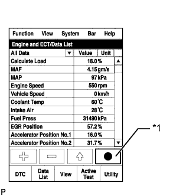

СИСТЕМА ECD (для моделей с DPF) > Двигатель запускается с трудом или глохнет |
| Неисправности устройств топливной системы Common Rail дизельного двигателя и их признаки |
Система управления двигателем
| Основная неисправность | Понижение рабочих характеристик (попадание постороннего объекта) | |
| Признаки | Недостаточная мощность, черный дым | |
| Data List | MAF | |
| ||
| Признак и соответствующая ему основная неисправность |
| |
| Параметры из Data List | MAP | |
| Основная неисправность |
| |
| Признаки | Недостаток мощности (при трогании автомобиля, при большой нагрузке) (при повышении частоты вращения коленчатого вала двигателя в неподвижном автомобиле черный дым не выпускается) | |
| Параметры из Data List | MAP
| |
| Основная неисправность | Засорение | |
| Признаки | Недостаток мощности (высокая частота вращения коленчатого вала двигателя, при большой нагрузке) | |
| Основная неисправность | Неисправность системы свечей накаливания | |
| Признаки | Затрудненный запуск, неравномерный холостой ход, детонация, белый дым (в холодную погоду) | |
| Параметры из Data List | Проверьте контрольную лампу свечи накаливания | |
| Способ диагностики | Измерьте сопротивление свечи накаливания | |
| Основная неисправность | Батарея разряжена | |
| Признаки | Затрудненный запуск (коленчатый вал двигателя не прокручивается, низкая частота прокручивания коленчатого вала), звуковой сигнал не работает | |
| Data List | Battery Voltage Во время прокручивания коленчатого вала двигателя напряжение аккумуляторной батареи ниже 5 В. | |
| Основная неисправность | Повреждение, заклинивание | |
| Признаки | Коленчатый вал двигателя не прокручивается, низкая частота вращения коленчатого вала двигателя при прокручивании, ненормальный шум | |
| Основная неисправность | Потеря компрессии | |
| Признаки | Неравномерный холостой ход (постоянно недостаток мощности) | |
| Data List | Engine Speed of Cyl
| |
| Основная неисправность | Неисправность системы запуска | |
| Признаки | Затрудненный запуск | |
| Data List | Starter Signal
| |
Система впрыска дизельного двигателя
| Основная неисправность | - | |
| Признаки | Затрудненный запуск, заглохание двигателя, неравномерный холостой ход, недостаточная мощность | |
| Параметры из Data List | Fuel Press, Target Common Rail Pressure, Target Pump SCV Current
| |
| Диагностический код неисправности DTC | Даже если значение Fuel Press меньше значения Target Common Rail Pressure, DTC не сохраняется. | |
| Основная неисправность | Засорение | |
| Признаки | Затрудненный запуск, заглохание двигателя, неравномерный холостой ход, недостаточная мощность | |
| Параметры из Data List | Fuel Press, Target Common Rail Pressure
| |
| Диагностический код неисправности DTC | Даже если значение Fuel Press меньше значения Target Common Rail Pressure, DTC не сохраняется. | |
| Основная неисправность | Засорение | |
| Признаки | Неравномерный холостой ход, недостаточная мощность, черный дым, белый дым, детонация | |
| Параметры из Data List | Injection Feedback Val
| |
| Основная неисправность | Не полностью закрывается | |
| Признаки | Затрудненный запуск, заглохание двигателя, неравномерный холостой ход, недостаточная мощность | |
| Основная неисправность | Неисправность цепи: форсунка в сборе не открывается. | |
| Признаки | Затрудненный запуск, неравномерный холостой ход, недостаток мощности, черный дым, белый дым, детонация | |
| Параметры из Data List | То же, что для форсунки в сборе | |
| Диагностический код неисправности DTC | Когда электронный блок привода форсунок неисправен, могут сохраняться некоторые DTC. | |
| Основная неисправность | Обрыв цепи, понижение рабочих характеристик (попадание постороннего объекта) | |
| Признаки | Затрудненный запуск, неравномерный холостой ход, заглохание двигателя, недостаток мощности | |
| Параметры из Data List | Fuel Press, Target Common Rail Pressure
| |
| Диагностический код неисправности DTC | Если датчик давления в топливной системе неисправен, могут регистрироваться некоторые DTC. | |
| Основная неисправность | - | |
| Признаки | Затрудненный запуск, неравномерный холостой ход (особенно в холодную погоду) | |
Система рециркуляции отработавших газов дизельного двигателя
| Основная неисправность |
| |
| Признаки |
| |
| Параметры из Data List | Actual EGR Valve Pos., Target EGR Pos.
| |
Дроссельная заслонка дизельного двигателя
| Основная неисправность | Заедание, неплавное перемещение | |
| Признаки |
| |
| Параметры из Data List |
| |
| Параметры из Data List, отсносящиеся к проблемам при запуске |
| Пояснение признака |
| Затруднения при запуске | Для надлежащего запуска необходимо:
При таких проблемах, как полный разряд аккумуляторной батареи или снижение частоты вращения коленчатого вала двигателя, а также когда в двигателе из-за утечки имеет место недостаточная компрессия, давление сжатия не повышается, и запуск затрудняется. Если двигатель холодный, давление сжатия в камере сгорания понижается, несмотря на наличие теплоты сжатия. Поэтому при запуске холодного двигателя свечи накаливания подогревают сжатый воздух. Кроме того, после запуска двигателя свечи накаливания заряжаются в течение фиксированного времени, определяемого в зависимости от температуры охлаждающей жидкости двигателя, что предотвращает детонацию дизельного двигателя и образование белого дыма. Количество впрыскиваемого топлива определяется давлением в топливной системе, а также продолжительностью открывания форсунки. |
| Блок-схема зависимости предполагаемого участка неисправности от причины неисправности |

| 1.ПРОВЕРЬТЕ ПРОКРУЧИВАНИЕ КОЛЕНЧАТОГО ВАЛА ДВИГАТЕЛЯ СТАРТЕРОМ |
Проверьте прокручивание коленчатого вала двигателя стартером.
| Результат | Перейти к |
| Коленчатый вал двигателя прокручивается нормально. | А |
Низкая частота вращения коленчатого вала двигателя при прокручивании.
| B |
| Коленчатый вал вообще не прокручивается. | C |
|
| ||||
|
| ||||
| А | |
| 2.СЧИТАЙТЕ ВСЕ ВЫВЕДЕННЫЕ DTC |
Подсоедините портативный диагностический прибор к DLC3.
Включите зажигание (IG) и портативный диагностический прибор.
Войдите в следующие меню: Utility / All Codes.
| Результат | Перейти к |
| Коды DTC не выводятся | А |
| Выводятся коды DTC, относящиеся к двигателю | B |
|
| ||||
| А | |
| 3.ЗАФИКСИРУЙТЕ МГНОВЕННЫЕ ЗНАЧЕНИЯ ПАРАМЕТРОВ ВО ВРЕМЯ ЗАПУСКА И В РЕЖИМЕ ХОЛОСТОГО ХОДА (ПРОЦЕДУРА 3) |
Подсоедините портативный диагностический прибор к DLC3.
Включите зажигание (IG) и портативный диагностический прибор.
Войдите в следующие меню: Powertrain / Engine and ECT / Data List / All Data.
|  |
Зафиксируйте мгновенные значения параметров на холостому ходу без нагрузки после прогрева двигателя при возникновения затруднений при запуске двигателя.
| *1 | Кнопка фиксации мгновенных значений параметров |
| ДАЛЕЕ | |
| 4.ПРОВЕРЬТЕ ФИКСИРОВАННЫЕ ЗНАЧЕНИЯ ПАРАМЕТРОВ (FUEL PRESS) |
Проверьте значение параметра Fuel Press в наборе мгновенных значений параметров, зафиксированных в процедуре 3 при запуске двигателя.
| Результат | Перейти к |
| В точке на графике с обозначением "a" значение параметра Fuel Press более чем на 10000 кПа отличается от значения параметра Fuel Press в начале прокручивания коленчатого вала двигателя | А |
| В точке на графике с обозначением "c" значение параметра Fuel Press ниже заданного давления в топливной системе Common Rail не менее чем на 15000 кПа | B |
| Значение параметра Fuel Press увеличивается до величины выше заданного давления в топливной системе Common Rail немедленно после начала прокручивания стартером коленчатого вала двигателя, а в точке на графике с обозначением "d" превышает заданное давление в топливной системе Common Rail | C |
| За исключением указанного выше | D |
|
| ||||
|
| ||||
|
| ||||
| А | |
| 5.ПРОВЕРЬТЕ, ПОДАЕТСЯ ЛИ ТОПЛИВО В НАГНЕТАЮЩИЙ ТОПЛИВНЫЙ НАСОС |
Отсоедините впускной патрубок от нагнетающего топливного насоса.
Управляя подкачивающим насосом, проверьте, подается ли топливо в нагнетающий топливный насос.
Подсоедините входной патрубок.
|
| ||||
| OK | |
| 6.ПРОВЕРЬТЕ ЖГУТ ПРОВОДОВ И РАЗЪЕМ (КЛАПАН РЕГУЛИРОВАНИЯ ВСАСЫВАНИЯ - ECM) |
Отсоедините разъем клапана регулирования всасывания.
Отсоедините разъем ЭБУ.
Измерьте сопротивление в соответствии со значениями, приведенными в таблице ниже.
| Подключение диагностического прибора | Условие | Заданные условия |
| C71-1 - C92-23 (PCV+) | Всегда | Менее 1 Ом |
| C71-2 - C92-12 (PCV-) | Всегда | Менее 1 Ом |
| Подключение диагностического прибора | Условие | Заданные условия |
| C71-1 или C92-23 (PCV+) - масса | Всегда | 10 кОм или более |
| C71-2 или C92-12 (PCV-) - масса | Всегда | 10 кОм или более |
Подсоедините разъем клапана регулирования всасывания.
Подсоедините разъем ECM.
|
| ||||
| OK | |
| 7.ЗАМЕНИТЕ КЛАПАН РЕГУЛИРОВАНИЯ ВСАСЫВАНИЯ |
Замените клапан регулирования всасывания (Нажмите здесь).
| ДАЛЕЕ | |
| 8.УДАЛИТЕ ВОЗДУХ ИЗ ТОПЛИВНОЙ СИСТЕМЫ |
Удалите воздух из топливной системы (Нажмите здесь).
| ДАЛЕЕ | |
| 9.ВЫПОЛНИТЕ ИНИЦИАЛИЗАЦИЮ НАГНЕТАЮЩЕГО ТОПЛИВНОГО НАСОСА |
Выполните инициализацию нагнетающего топливного насоса (Нажмите здесь).
| ДАЛЕЕ | |
| 10.СНИМИТЕ ПОКАЗАНИЯ ПОРТАТИВНОГО ДИАГНОСТИЧЕСКОГО ПРИБОРА (ДАВЛЕНИЕ В ТОПЛИВНОЙ СИСТЕМЕ) |
Подсоедините портативный диагностический прибор к DLC3.
Включите зажигание (IG) и портативный диагностический прибор.
Войдите в следующие меню: Powertrain / Engine and ECT / Data List / Fuel Press.
Запустите двигатель.
Считайте значения Fuel Press во время прокручивания коленчатого вала двигателя и на холостом ходу.
| Результат | Перейти к |
| Двигатель не запускается или запускается, но значение Fuel Press через 2 с после переключения сигнала стартера из состояния OFF (ВЫКЛ) в состояние ON (ВКЛ) оказывается ниже 20000 кПа | B |
| За исключением указанного выше | А |
|
| ||||
| А | ||
| ||
| 11.ПРОВЕРЬТЕ ФОРСУНКУ В СБОРЕ (ПРОВЕРКА ЗАКРЫВАНИЯ КЛАПАНА) |
Снимите свечи накаливания в сборе для всех цилиндров (Нажмите здесь).
Визуально проверьте, нет ли топлива на свечах накаливания.
Установите свечу накаливания в сборе (Нажмите здесь).
|
| ||||
| 12.ПРОВЕРЬТЕ И ОТРЕМОНТИРУЙТЕ ИЛИ ЗАМЕНИТЕ ЗАСОРЕННЫЙ ТОПЛИВОПРОВОД (В ТОМ ЧИСЛЕ ПРИ ЗАМЕРЗАНИИ ТОПЛИВА) (ТОПЛИВНЫЙ БАК – НАГНЕТАЮЩИЙ ТОПЛИВНЫЙ НАСОС) |
Проверьте и отремонтируйте или замените засоренный топливопровод.
| ДАЛЕЕ | |
| 13.УДАЛИТЕ ВОЗДУХ ИЗ ТОПЛИВНОЙ СИСТЕМЫ |
Удалите воздух из топливной системы (Нажмите здесь).
|
| ||||
| 14.СНИМИТЕ ПОКАЗАНИЯ ПОРТАТИВНОГО ДИАГНОСТИЧЕСКОГО ПРИБОРА (ДАВЛЕНИЕ В ТОПЛИВНОЙ СИСТЕМЕ) |
Проверьте значение параметра Fuel Press в наборе мгновенных значений параметров, зафиксированных в процедуре 3 при прогретом двигателе.
| Результат | Перейти к |
| Значение Fuel Press превышает Target Common Rail Pressure более чем на 5000 кПа. | А |
| За исключением указанного выше | B |
|
| ||||
| А | |
| 15.ЗАМЕНИТЕ КЛАПАН РЕГУЛИРОВАНИЯ ВСАСЫВАНИЯ |
Замените клапан регулирования всасывания (Нажмите здесь).
| ДАЛЕЕ | |
| 16.ВЫПОЛНИТЕ ИНИЦИАЛИЗАЦИЮ НАГНЕТАЮЩЕГО ТОПЛИВНОГО НАСОСА |
Выполните инициализацию нагнетающего топливного насоса (Нажмите здесь).
| ДАЛЕЕ | |
| 17.ЗАМЕНИТЕ ФОРСУНКИ ВСЕХ ЦИЛИНДРОВ В СБОРЕ |
Замените форсунки в сборе (Нажмите здесь).
|
| ||||
| 18.ПРОВЕРЬТЕ ФОРСУНКУ В СБОРЕ (НА НАЛИЧИЕ ВОЗДУХА) |
Если двигатель не запускается, выполните следующие действия.
Остановите двигатель и оставьте автомобиль на время не менее 4 часов.
Убедитесь, что двигатель запускается.
Когда двигатель запустится, выполните следующие действия.
Удалите воздух из топливной системы (Нажмите здесь).
Убедитесь, что двигатель запускается.
|
| ||||
| OK | ||
| ||
| 19.ПРОВЕРЬТЕ ПАРАМЕТРЫ DATA LIST |
Проверьте значения Injection Feedback Val # в наборе мгновенных значений параметров, зафиксированных в процедуре 3 в режиме холостого хода двигателя.
| *1 | Кнопка фиксации мгновенных значений параметров |
| Результат | Перейти к |
| Значения Injection Feedback Val #1 – #4 не превышают 3 мм3/ход. Значение Injection Volume превышает 12 мм3/ход. | A* |
Значение Feedback Val, по крайней мере, для одного цилиндра превышает 3 мм3/ход
| B |
| За исключением указанного выше | C |
|
| ||||
|
| ||||
| А | |
| 20.ЗАМЕНИТЕ ФОРСУНКИ ВСЕХ ЦИЛИНДРОВ В СБОРЕ |
Замените форсунки в сборе (Нажмите здесь).
|
| ||||
| 21.ВЫПОЛНИТЕ АКТИВНУЮ ДИАГНОСТИКУ С ПОМОЩЬЮ ПОРТАТИВНОГО ДИАГНОСТИЧЕСКОГО ПРИБОРА (CHECK THE CYLINDER COMPRESSION) |
Подсоедините портативный диагностический прибор к DLC3.
Запустите двигатель и включите портативный диагностический прибор.
Войдите в следующие меню: Powertrain / Engine and ECT / Active Test / Check the Cylinder Compression / Data List / Compression / Engine Speed of Cyl #1 – #4.
Проверьте частоту вращения коленчатого вала двигателя в режиме Active Test.
| Результат | Перейти к |
| Любое состояние, кроме описанного ниже | А |
| Значения параметров Engine Speed Cyl #1 – #4 не отличаются друг от друга более чем на +/-10 об/мин. | B |
|
| ||||
| А | |
| 22.ПРОВЕРЬТЕ ДАВЛЕНИЕ СЖАТИЯ В НЕИСПРАВНОМ ЦИЛИНДРЕ |
Проверьте давление сжатия в цилиндре (Нажмите здесь).
|
| ||||
| OK | |
| 23.ЗАМЕНИТЕ НЕИСПРАВНУЮ ФОРСУНКУ ЦИЛИНДРА |
Замените форсунку в сборе (Нажмите здесь).
| ДАЛЕЕ | |
| 24.ЗАМЕНИТЕ ФИЛЬТРУЮЩИЙ ЭЛЕМЕНТ ТОПЛИВНОГО ФИЛЬТРА В СБОРЕ |
Замените фильтрующий элемент топливного фильтра в сборе (Нажмите здесь).
| ДАЛЕЕ | |
| 25.УДАЛИТЕ ВОЗДУХ ИЗ ТОПЛИВНОЙ СИСТЕМЫ |
Удалите воздух из топливной системы (Нажмите здесь).
| ДАЛЕЕ | |
| 26.ЗАРЕГИСТРИРУЙТЕ КОМПЕНСАЦИОННЫЙ КОД ФОРСУНКИ И ПРОИЗВЕДИТЕ НАСТРОЙКУ ОБЪЕМА ПРЕДВАРИТЕЛЬНОГО ВПРЫСКА |
Зарегистрируйте компенсационные коды форсунок (Нажмите здесь).
Произведите настройку объема предварительного впрыска (Нажмите здесь).
| ДАЛЕЕ | |
| 27.ПРОВЕРЬТЕ, УСТРАНЕНА ЛИ ДОЛЖНЫМ ОБРАЗОМ НЕИСПРАВНОСТЬ |
| ДАЛЕЕ | ||
| ||
| 28.ПРОВЕРЬТЕ ЭЛЕКТРОННЫЙ БЛОК ПРИВОДА ФОРСУНОК |
Даже в тех случаях, когда DTC P062D не сохраняется, но двигатель не запускается, выполните процедуру диагностики для DTC P062D (характеристики цепи электронного блока привода форсунок № 1) (Нажмите здесь).
|
| ||||
| OK | |
| 29.ПРОВЕРЬТЕ ФОРСУНКУ В СБОРЕ |
Проверьте топливные форсунки (Нажмите здесь).
| ДАЛЕЕ | |
| 30.ИЗМЕРЬТЕ ТЕМПЕРАТУРУ НА МОМЕНТ ВОЗНИКНОВЕНИЯ ЗАТРУДНЕНИЙ ПРИ ЗАПУСКЕ |
Измерьте температуру на момент возникновения затруднений при запуске.
| Результат | Перейти к |
| Затрудненный запуск только холодного двигателя. | А |
| Затрудненный запуск холодного и горячего двигателя. | B |
|
| ||||
| А | |
| 31.СНИМИТЕ ПОКАЗАНИЯ ДЛЯ ДАТЧИКА ТЕМПЕРАТУРЫ ОХЛАЖДАЮЩЕЙ ЖИДКОСТИ (COOLANT TEMP) |
Подсоедините портативный диагностический прибор к DLC3.
Включите зажигание (IG) и портативный диагностический прибор.
Войдите в следующие меню: Powertrain / Engine and ECT / Data List / All Data / Coolant Temp.
Считайте значение, отображенное на диагностическом приборе.
|
| ||||
| OK | |
| 32.ПРОВЕРЬТЕ СВЕЧУ НАКАЛИВАНИЯ (СОПРОТИВЛЕНИЕ) |
Проверьте свечу накаливания (Нажмите здесь).
|
| ||||
| OK | |
| 33.ПРОВЕРЬТЕ КАЧЕСТВО ТОПЛИВА |
Убедитесь, что используется только дизельное топливо.
Убедитесь, что топливо не содержит никаких примесей.
|
| ||||
| 34.СЧИТАЙТЕ КОДЫ DTC (СВЯЗАННЫЕ С ДВИГАТЕЛЕМ) |
Подсоедините портативный диагностический прибор к DLC3.
Включите зажигание (IG) и портативный диагностический прибор.
Войдите в следующие меню: Powertrain / Engine and ECT / DTC.
Считайте коды DTC.
| Результат | Перейти к |
| Коды DTC не выводятся | А |
| Выводятся коды DTC, относящиеся к двигателю | B |
|
| ||||
| А | |
| 35.ПРОВЕРЬТЕ СОСТОЯНИЕ СОЕДИНЕНИЯ МЕЖДУ ПОРТАТИВНЫМ ДИАГНОСТИЧЕСКИМ ПРИБОРОМ И ECM |
Подсоедините портативный диагностический прибор к DLC3.
Включите зажигание (IG) и включите портативный диагностический прибор.
Проверьте, появляется ли окно нормального запуска (проверьте, имеется ли связь с ECM).
|
| ||||
| OK | |
| 36.СНИМИТЕ ПОКАЗАНИЯ ПОРТАТИВНОГО ДИАГНОСТИЧЕСКОГО ПРИБОРА (STARTER SIGNAL И NEUTRAL POSITION SW SIGNAL) |
Подсоедините портативный диагностический прибор к DLC3.
Включите зажигание (IG) и портативный диагностический прибор.
Войдите в следующие меню: Powertrain / Engine and ECT / Data List / All Data / Starter Signal и Neutral Position SW Signal.
Считайте значение, отображенное на диагностическом приборе.
| Информация на дисплее прибора | Условие | Заданные условия |
| Starter Signal | Прокручивание коленчатого вала стартером | ON (ВКЛ) |
| Neutral Position SW Signal | Рычаг переключения передач в нейтральном положении | ON (ВКЛ) |
| Результат | Следующий шаг |
| OK | А |
| NG (для моделей с механической трансмиссией) | B |
| NG (для моделей с автоматической трансмиссией) | C |
|
| ||||
|
| ||||
| А | |
| 37.ПРОВЕРЬТЕ СИСТЕМУ ЗАПУСКА |
Проверьте систему запуска.
| ДАЛЕЕ | |
| 38.ПРОВЕРЬТЕ, УСТРАНЕНА ЛИ ДОЛЖНЫМ ОБРАЗОМ НЕИСПРАВНОСТЬ |
| СЛЕДУЮЩЕЕ | ||
| ||